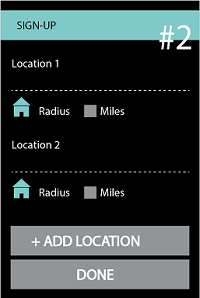
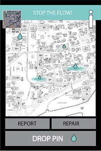

About the app
My partner and I wanted to make an app that specifically focused on
the danger of leaks, regarding the drought. Our project was inspired by
an app called Wayz that alerts drivers where things are around them, such
as police on duty. We wanted to make an app that could alert people where
leaks are. Leaks contribute 17% of water waste in the United States-- which
is a lot. The info screen tells people why leaks are so important and also
educates them on how to look for common leaks in their daily environment.
This is the message we want to send out to users: to be aware of
your surroundings and participate in a group effort to save water.
Step 1: Sign Up
You first sign up for an account setting up a user name and general info.
Then you are asked to set your location and radius of notifications that you
wish to recieve from that location. People can set their locations for their
home, a building they manage or even just their neighborhood. This allows users
to be notified of leaks in their area and allows them to keep track of anything
that needs attention.

Step 2: Take action!
Once you sign up for the app you then have access to 3 main
screens: report, repair and a general map. If you are walking by a building
or on your way to the bathroom exit and you spot a leak, you can then fill
out information about the leak to report it. After it is reported, a spot
on the UC Davis map is marked with a flag, shaped like a water drop. That's
all there is to it to report, it's pretty easy and users can collect points
for how many leaks they report and can use them for special givaways.
Repairing a leak starts with the map with all of its flagged leaks. The
longer a leak goes unrepaired, its puddle grows larger to illustrate the
severeness of that leak and that more and more water is being wasted. To
repair, whether you own a building and want to repair your leak or you see
a public leak, you simply click on the water drop flag and you are presented
with some options. You can either knock on the person's door/leave a note if
the leak is located at a person's home. Or you can call repair men to come
repair your leak for your own building or a public space.

Promo Video
Here is a promotional video my partner and I created together, which ended up
being how our final project was required to be presented. In the end Gaya
and I were proud of our idea and thought, and still think, it could take
off and make a real difference in California.